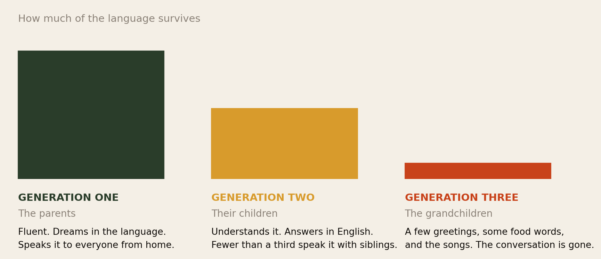
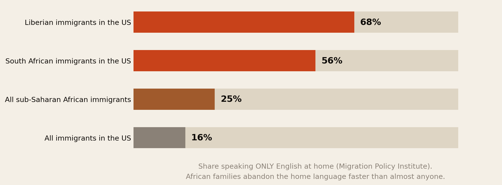
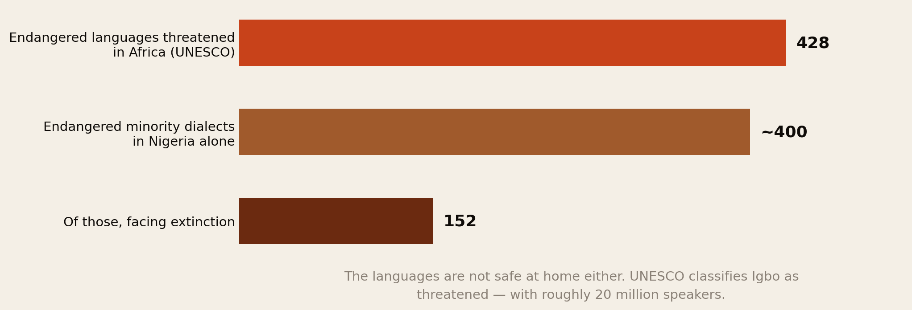
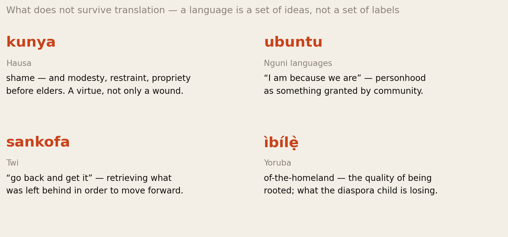
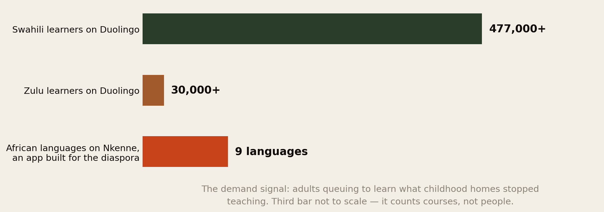
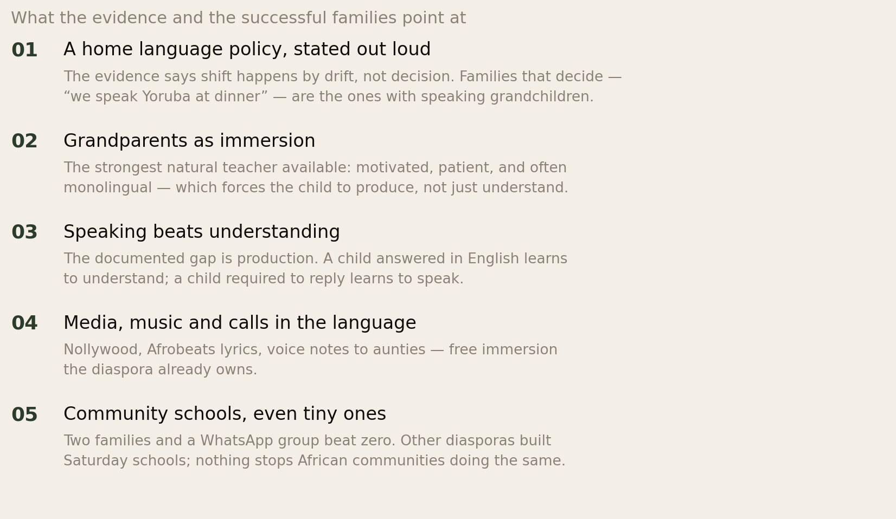

Three Generations to Silence.
Somewhere there is a grandmother who cannot have a conversation with her grandchildren. Nobody decided this. It happened one convenient English sentence at a time. The research says it takes three generations for a migrating family to lose its language — and that African families are losing theirs faster than almost anyone else.
Section 01The Short Version
Every diaspora family knows the scene. The parents speak Yoruba, or Twi, or Amharic, or Somali to each other. They speak English to the children — for good reasons, at the time. The children understand the language but answer in English. The grandchildren get greetings, food words, and the songs. The conversation is gone.
- The pattern is documented and it is universal. Across immigrant groups, the home language is fluent in the first generation, understood-but-not-spoken in the second, and gone by the third. Researchers have measured this for decades; the landmark study in Demography called it “only English by the third generation.”
- African families are on the fast track. 25% of sub-Saharan African immigrants in the US speak only English at home — against 16% of all immigrants. For Liberians it is 68%; for South Africans, 56%. The colonial language head start becomes a heritage language handicap.
- The loss happens earlier than the folklore says. The literature says the third generation loses the language, but the shift happens in the second: in a comparable UK study of second-generation children, most understood their heritage language, yet fewer than a third spoke it with their own siblings. Understanding without speaking is the last stage before silence.
- The languages are not safe at home either. UNESCO counts roughly 428 threatened languages in Africa and classifies Igbo as endangered despite ~20 million speakers, because urban Nigerian children are increasingly not being raised in it. The diaspora is not losing something the homeland will keep for it.
- The regret is measurable. Over 477,000 people are learning Swahili on Duolingo; apps like Nkenne exist purely to teach diaspora adults the languages their childhood homes stopped speaking. The demand arrives one generation after the supply was cut.
- And keeping the language costs almost nothing. The practices that work — a stated home-language policy, grandparents as immersion, requiring children to answer in the language — are free. What they cost is consistency, and the willingness to feel slightly awkward at dinner.
A language does not die in an argument. It dies in convenience — one answered-in-English question at a time, in homes full of love.
Section 02The Rule of Three Generations

This is one of the most consistently replicated findings in the study of migration. The landmark analysis in Demography examined the grandchildren of immigrants to the United States and asked whether any group escaped the pattern. Essentially none did. The first generation speaks the mother tongue. The second is bilingual on paper — but tilted, using the heritage language with parents and the dominant language everywhere else. The third generation speaks English, full stop.
Three things about the rule are worth absorbing before we get to the African case.
- It does not require anyone to reject anything. No generation decides to abandon the language. Each makes locally sensible choices — English for school, English for friends, English because it is faster — and the sum of sensible choices is extinction in the home.
- It survives love, pride and intention. Families that treasure their culture lose the language on the same schedule as families that do not, unless they change specific behaviours. Sentiment is not transmission.
- It is a default, not a destiny. The same literature documents the exceptions — and the exceptions share practices, not feelings. Those practices are Section 10.
Section 03The African Paradox

Here is the finding this report exists for. You would expect a diaspora as proudly cultural as Africa’s to hold its languages at least as well as other groups. The census data says the opposite.
A quarter of sub-Saharan African immigrants in the US speak only English at home, against 16% of all immigrants. Where English is an official language of the origin country, the numbers jump: 68% of Liberian and 56% of South African immigrants keep no other language in the house at all. Note what this measures — not the children’s ability, but the first generation’s own choice of home language. For many African families the three-generation clock starts a generation early, because generation one has already switched.
The mechanism is colonial history doing quiet work. In most of anglophone Africa, English was already the language of school, exams, offices and status before anyone emigrated. Parents were educated in it, succeeded through it, and often associate the home language with the village and English with advancement. Emigration did not introduce that hierarchy. It just removed the last environments where the home language was necessary.
Other diasporas must learn the new country’s language. African families often arrive already fluent in it — which is a huge advantage for the parents’ careers, and quietly fatal for the grandmother’s conversations.
This connects to a pattern across our research: the same colonial-language inheritance that makes African migrants succeed fast in anglophone labour markets — documented in How Long Until It Was Worth It? — is the very thing that accelerates the loss here. The asset and the cost are the same object.
Section 04Where the Shift Actually Happens
The folklore says the third generation loses the language. The research is more precise, and more useful: the third generation is where the loss becomes visible. The shift itself happens in the second — and inside the first generation’s own home.
- The gap is production, not comprehension. In a UK study of second-generation South Asian children — the closest well-measured comparator — most understood their heritage language, yet fewer than a third spoke it with their own siblings. A child who understands but always answers in English is not bilingual. They are a fluent listener in a language they will not pass on.
- Parents drive it, meaning well. Research on immigrant families repeatedly finds parents switching to English with their children out of concern for school success — despite the evidence (Section 07) that the home language does not hold children back.
- Siblings finish it. Once children speak English to each other, the heritage language loses its last daily arena. Studies of African immigrant households in the US find a child’s English dominance rises with the number of other English-proficient children in the house — the more siblings, the faster the tilt.
The practical conclusion is sharp: by the time a family notices the loss — usually when a grandparent visits — the decisive years are already behind them. The window is early childhood, and the lever is not whether children hear the language but whether they are required to produce it.
Section 05Not Safe at Home Either

The comfortable assumption is that the diaspora’s loss does not really matter, because the homeland keeps the language safe. The evidence removes that comfort.
UNESCO counts roughly 428 threatened languages in Africa and warns that up to 10% of the continent’s languages may vanish within a century. In Nigeria alone, around 400 minority dialects are considered endangered, 152 of them facing extinction. And the headline case: UNESCO classifies Igbo as endangered — a language with roughly 20 million speakers — because in urban Nigeria, English-medium schooling and status economics mean many Igbo children can no longer hold a conversation in it. The same force operating in Peckham operates in Lagos and Enugu.
This changes what the diaspora’s choice means. If the homeland were a secure reservoir, a family abroad could reasonably treat the language as something the child can “pick up later, back home.” For the big languages — Swahili, Hausa, Amharic — that may hold. For hundreds of others, the diaspora is not losing its copy of something safely archived. It is losing one of the last copies.
Section 06What Is Actually Lost

“They can always learn it later” treats a language as vocabulary. What actually travels inside a language is harder to replace:
- The grandparent relationship. This is the concrete, near-term loss. Where the grandparents’ English is limited, the language is the relationship — and the child who loses one loses the other. No later app course restores a childhood of conversations that did not happen.
- Concepts with no English container. Our report on shame turned on exactly this: Hausa kunya names both a sanction and a virtue, and the English word “shame” simply cannot carry that. A child raised only in English does not just lack the word — they lack easy access to the idea.
- The oral archive. Proverbs, praise names, the grandmother’s stories, the jokes that only land in the original. African cultures carried disproportionate amounts of their knowledge orally; each generation that cannot listen is a wing of the archive closing.
- Standing in the homeland. The diaspora child who returns without the language is legible to everyone as a visitor — including to themselves. Members of this network describe it as being read as foreign in both countries at once. Our identity report covers the psychology; the language is its load-bearing wall.
Section 07The Cognitive Question
![Two-column summary of the bilingualism evidence. Reasonably well supported: bilingual children outperform monolinguals on executive function tasks more often than chance; advantages appear on inhibition and cognitive flexibility tasks; no evidence a second home language harms school English. Genuinely contested: the advantage disappears on working memory measures in several studies; some recent studies find null or mixed effects once background is controlled; socioeconomic status may explain part of what looked like bilingual advantage.](img/bilingual_evidence.png)
The argument most often reached for — “bilingualism makes children smarter” — deserves an honest audit, because it is both partly true and routinely oversold.
What holds up: a quantitative synthesis finds bilingual children outperform monolinguals on executive-function tasks far more often than chance, with the clearest effects on inhibition and cognitive flexibility. And the fear that drives the switch — that the home language will hold a child back in English — finds no support; the US research on African immigrant children shows their English proficiency is shaped by the household’s English resources, not damaged by an additional language.
What is contested: several studies find the advantage vanishes on working-memory measures; recent work reports null or mixed effects; and socioeconomic status confounds some of the classic results. The honest reading is that the cognitive bonus is real but modest and inconsistent — a tailwind, not a superpower.
Which is fine, because the case never rested on IQ points. The strongest facts are simpler: the second language costs a child nothing academically, and it buys a grandmother.
Section 08The Regret Market

If you want proof that the loss is felt, look at who is paying to reverse it.
Over 477,000 people are learning Swahili on Duolingo, and over 30,000 are learning Zulu. Nkenne — an app built explicitly for the diaspora — teaches nine African languages, including Igbo, Yoruba, Twi, Hausa, Somali and Amharic. A market has formed around adult heritage learners: people in their twenties and thirties buying back, at app speed and subscription prices, what their households once had for free.
Two readings, both true. The optimistic one: demand exists, tools exist, and revival is a real movement — people are becoming deliberately intentional about teaching children the languages. The sober one: the demand arrives one generation after the supply was cut, and an app can deliver vocabulary but not the accent, the idiom, or the years of dinner-table repetition. The regret market is real precisely because the cheap window closed.
There is also an unmistakable echo of our media research here: heritage-language learning for African adults abroad is another documented-demand, no-incumbent category. One dedicated app is not a crowded market.
Section 09Why African Languages Get No Help
![Five reasons the shift is faster for African families: English is already the home's prestige language because colonial schooling made it the language of exams, jobs and status; parents optimise for the child's success and reclassify the home language as a luxury; no institutional back-up, since Greek, Polish, Chinese and Tamil communities run Saturday schools at scale and African languages mostly have no equivalent; the community is split by language, a city's Nigerian community speaking Yoruba, Igbo, Hausa and more with too few families per language to sustain a school; and the audience judges the accent, so children mocked for speaking it badly conclude it is safer not to speak at all.](img/why_it_happens.png)
Other diasporas leak their languages too. What makes the African case faster is a stack of disadvantages that other groups mostly do not face at once.
The deepest is the first: the prestige hierarchy predates migration. A Polish family in Chicago never regarded Polish as the low-status language of their own home. Many African families, schooled under systems where speaking the mother tongue in class was punished, did — and carried that ranking abroad intact.
The most fixable is the third: infrastructure. Greek, Chinese, Polish, and Tamil communities built Saturday-school systems that industrialise transmission — teachers, curricula, exams, other children. African languages largely lack the equivalent, partly because of the fourth problem: a “Nigerian community” of ten thousand people is a Yoruba community, an Igbo community, a Hausa community and a dozen smaller ones, none individually large enough to staff a school. Fragmentation does to language schools what it does to everything else — it keeps each group below critical mass.
And the fifth reason is our shame report wearing a smaller coat: the child who attempts the language and gets laughed at — by cousins back home, by aunties, sometimes by the parents themselves — learns that attempting it badly is more shameful than not attempting it. A system that punishes visible imperfection produces silence here exactly as it produces silence in clinics.
Section 10What Actually Works

The research on families that beat the three-generation rule converges on something almost annoyingly simple: they replaced drift with policy.
- Say the rule out loud. “We speak Twi at dinner.” “Grandma’s calls happen in Somali.” Families with an explicit rule keep languages; families with warm intentions do not. The shift is a default, and defaults are only beaten by decisions.
- Deploy the grandparents. A monolingual grandparent is the best language teacher a family will ever have: infinitely patient, deeply motivated, and — crucially — unable to accept answers in English. Video calls make this available across continents for free.
- Require production, not just exposure. The measured gap is speaking, not understanding. The single highest-leverage habit is refusing to complete the switch: when the child answers in English, the parent replies — kindly, boringly, forever — in the language.
- Use the media the diaspora already owns. Nollywood, Afrobeats lyrics, voice notes, church services. Free immersion at industrial scale; our music research documents how much of it the diaspora already consumes.
- Build tiny institutions. A Saturday class needs two families, one fluent adult and a room. The Greek and Tamil systems started exactly there. Waiting for someone to build it at scale is how another generation passes.
Note what is absent from the list: money. Every item is free or nearly so. The binding constraint is not resources. It is the daily willingness to be the slightly awkward household that answers English questions in Yoruba.
Section 11If You Are Raising Children Abroad
- Start before it feels necessary. The decisive window is early childhood, and the loss is invisible until a grandparent visit reveals it. If your child answers you in English today, the clock is already running.
- Do not fear for their English. The evidence gives no support to the worry that drives the switch. Their English is guaranteed by the entire society around them. You are the only supplier of the other language they will ever have.
- Protect the attempt. The accent will be imperfect and the grammar will wobble. The child who is laughed at stops. One firm sentence to the laughing auntie is worth a year of lessons.
- Understanding is not the goal — speaking is. A house where children understand but answer in English feels bilingual and is one generation from silence. Hold the line on replies.
- If the language is small, write things down. For the hundreds of genuinely endangered languages, record the grandparents — stories, proverbs, names, songs. A phone and an afternoon creates an archive that will otherwise not exist.
- And if you are second-generation and it is already gone: the apps are real, the market exists because you are not alone, and partial recovery — enough for the phone calls, enough for the visit — is a realistic goal. Fluency-or-nothing is the perfectionism that caused the problem.
Section 12The Uncomfortable Part
First, the parents who switched were not careless. They were often obeying the explicit advice of teachers and doctors, in decades when professionals wrongly told immigrant families that two languages would confuse a child. Others were protecting children from playground racism aimed at the accent. The generation that lost the language was, in most cases, trying to give its children the country. Blame is not just unkind here; it is inaccurate.
Second, the economics are genuinely against the language. This library documents, report after report, that English is what the global economy pays for — the earnings premium, the credential recognition, the streaming royalties. A parent who prioritises English is reading the incentives correctly. The case for the home language is not economic and should not pretend to be. It is about who the child gets to be, and who they get to talk to.
Third, the child gets a vote. Some second-generation adults do not mourn the language, and resent the suggestion that they are incomplete without it. Heritage is an inheritance, not an obligation, and a report like this walks close to the same “what will people say” machinery we criticised elsewhere. The honest position: the loss is real, the grief many feel is real, and so is the right to feel neither.
The window closes quietly, and it closes early. Whatever a family decides, it should be a decision — because the default has already been decided, and it is silence in three generations.
Section 13Method & Limits
This report assembles published research as at 19 August 2026 on heritage language shift, applied to Africans abroad.
- Fig 1’s bar heights are illustrative. The three-generation pattern is robustly documented; the specific proportions surviving at each stage vary by group and study, and we have deliberately not invented precise numbers for them.
- The “fewer than a third speak it with siblings” figure is from second-generation South Asian children in the UK, used as the best-measured comparator. No equivalent large study of African-language transmission in the diaspora exists — which is itself a finding. Treat the number as indicative of the second-generation pattern, not as a measurement of African families.
- The English-only-at-home figures measure household language use, not children’s ability, and they aggregate wildly different situations — a Liberian family for whom English genuinely is the mother tongue is counted alongside a Yoruba family that switched. The Liberia and South Africa numbers partly reflect that English is a first language for many; the 25% average still sits far above the all-immigrant 16%.
- Endangerment counts vary by source and method. UNESCO’s ~428, Nigeria’s ~400 dialects and the 152 facing extinction come from different exercises with different definitions of “language,” “dialect” and “endangered.” Use them as orders of magnitude. The Igbo classification is UNESCO’s and is contested by some Nigerian linguists.
- The bilingual-advantage literature is presented divided because it is divided. We have shown the contested column at the same size as the supported one deliberately.
- Section 10 is evidence-informed, not trial-tested. The practices come from the transmission literature and documented family strategies; no randomised study proves any specific bundle. The direction — explicit policy beats drift, production beats exposure — is consistent across the research.
- The four words in Fig 4 are simplified glosses by non-speakers relying on published discussions. Each carries meanings a caption cannot hold, and speakers of these languages will have corrections — which we would genuinely welcome.
- Duolingo learner counts are platform-reported totals of course enrolments, not active or diaspora-specific learners.
Principal sources: Alba et al., Demography on the three-generation pattern; Migration Policy Institute on home language use among sub-Saharan African immigrants; research on household context and English proficiency among children of African immigrants; University of Alberta and the International Journal of Bilingualism on second-generation speaking patterns; UNESCO endangerment figures via The Guardian Nigeria and research on Igbo endangerment; quantitative synthesis of bilingual executive-function research and the PRISMA systematic review; Duolingo and reporting on African language courses; Nkenne’s published course list.
Companion reports: What Will People Say?, Navigating Cultural Identity and How Long Until It Was Worth It?
The diaspora helps the diaspora.
Africa Global Forum is a peer network for Africans abroad — help each other, sit together, and bounce ideas. This research is part of an open library, free to read and share.